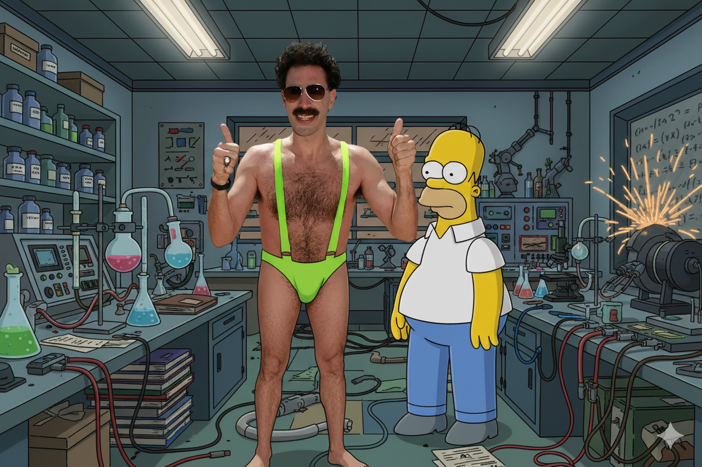

UG nasceu de uma ideia simples, mas poderosa: transformar um item cotidiano em uma declaração de estilo. Fundada em 2023 por um grupo de amigos apaixonados por design e funcionalidade, a UG (abreviação de "Urban Glow") rapidamente se tornou sinônimo de isqueiros que combinam alta performance com um toque de elegância urbana.
A nossa jornada começou com a frustração de não encontrar isqueiros que fossem duráveis, confiáveis e que, ao mesmo tempo, refletissem a personalidade de quem os usava. Decidimos, então, criar a solução. A UG se destaca pela curadoria de modelos exclusivos, desde os clássicos recarregáveis, que unem a nostalgia ao compromisso com a sustentabilidade até designs modernos e minimalistas, que se encaixam perfeitamente na vida agitada da cidade.